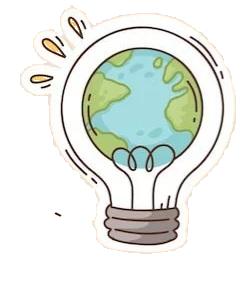
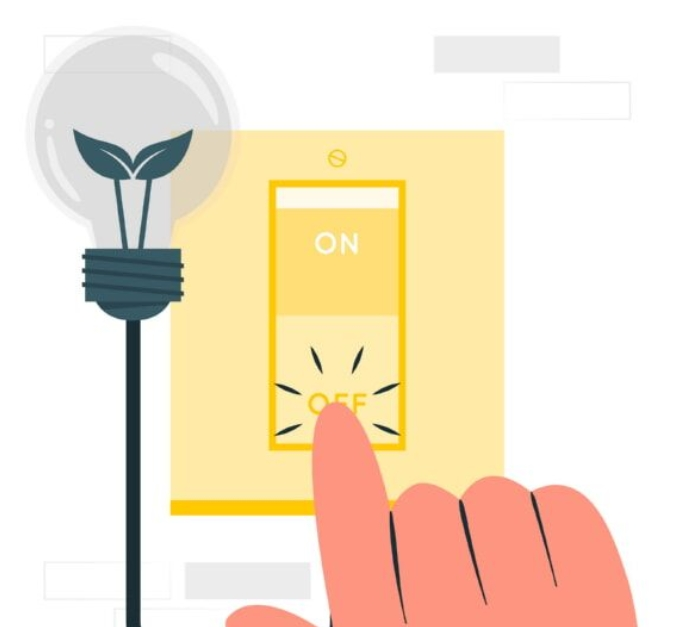
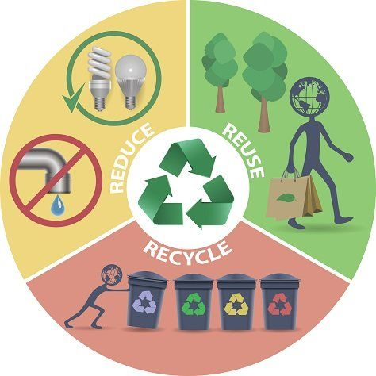
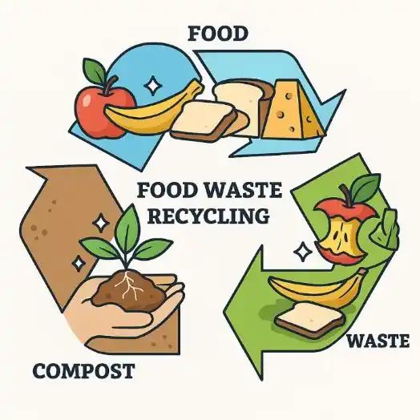
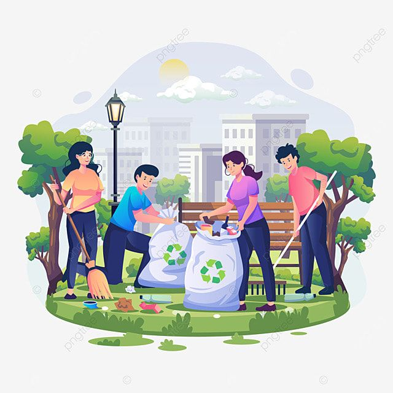

LET'S DO SOMETHING
FOR A BETTER TOMMOROW
Save energy at home

Much of our electricity and heat are powered by coal, oil and gas. Use less energy by reducing your heating and cooling use, switching to LED light bulbs and energy-efficient electric appliances, washing your laundry with cold water, or hanging things to dry instead of using a dryer. Improving your home’s energy efficiency, through better insulation for instance, or replacing your oil or gas furnace with an electric heat pump can reduce your carbon footprint by up to 900 kilograms of CO2e per year.
Walk, cycle or take public transport
The world’s roadways are clogged with vehicles, most of them burning diesel or gasoline. Walking or riding a bike instead of driving will reduce greenhouse gas emissions -- and help your health and fitness. For longer distances, consider taking a train or bus. And carpool whenever possible. Living car-free can reduce your carbon footprint by up to 2 tons of CO2e per year compared to a lifestyle using a car.
Reduce, reuse, repair and recycle

Electronics, clothes, plastics and other items we buy cause carbon emissions at each point in production, from the extraction of raw materials to manufacturing and transporting goods to market. To protect the climate, buy fewer things, shop second-hand, and repair what you can. Plastics alone generated 1.8 billion metric tonnes of greenhouse gas emissions in 2019 – 3.4 per cent of the global total. Less than 10 per cent is recycled, and once plastic is discarded, it can linger for hundreds of years. Buying fewer new clothes – and other consumer goods – can also reduce your carbon footprint. Every kilogram of textiles produced generates about 17 kilograms of CO2e.
Throw away less food

When you throw food away, you're also wasting the resources and energy that were used to grow, produce, package, and transport it. And when food rots in a landfill, it produces methane, a powerful greenhouse gas. So purchase only what you need, use what you buy and compost any leftovers. Cutting your food waste can reduce your carbon footprint by up to 300 kilograms of CO2e per year.
Plant native species
If you have a garden or even just a plant or two outside your home, check for native species. Use a plant identification app to help. And then think about replacing non-natives, especially any considered invasive. Plants, animals and insects depend on each other. Most insects will not eat non-native plants, which means birds and other species lose a food source. Biodiversity suffers. Even a single tree or shrub can offer a refuge – just remember to skip insecticides and other chemicals.
Clean up your environment
